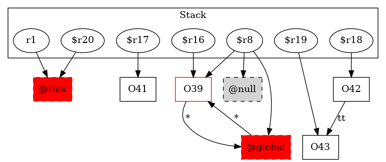

-1 : r1 := @this: Test4
39 : $r16 = new testcase.Test4$2LocalClass
-1 : $r20 = (testcase.Test4) r1
39 : specialinvoke $r16.|testcase.Test4$2LocalClass: void |init|(testcase.Test4)|($r20)
41 : $r17 = new testcase.Test4
41 : specialinvoke $r17.|testcase.Test4: void |init|()|()
42 : $r18 = new testcase.Test4
42 : specialinvoke $r18.|testcase.Test4: void |init|()|()
43 : $r19 = new testcase.Test4
43 : specialinvoke $r19.|testcase.Test4: void |init|()|()
43 : $r18.|testcase.Test4: testcase.Test4 tt| = $r19
46 : $r8 = virtualinvoke $r16.|java.lang.Object: java.lang.Class getClass()|() ->class soot.jimple.internal.JAssignStmt {Left: class soot.jimple.internal.JimpleLocal, Right: class soot.jimple.internal.JVirtualInvokeExpr}
46 : $r9 = newarray (java.lang.Class)[2]
46 : $r9[0] = class "Ltestcase/Test4;"
46 : $r9[1] = class "Ltestcase/Test4;"
46 : $r10 = virtualinvoke $r8.|java.lang.Class: java.lang.reflect.Method getMethod(java.lang.String,java.lang.Class[])|("add", $r9)
46 : $r11 = newarray (java.lang.Object)[2]
46 : $r12 = $r17.|testcase.Test4: testcase.Test4 tt|
46 : $r11[0] = $r12
46 : $r13 = $r18.|testcase.Test4: testcase.Test4 tt|
46 : $r11[1] = $r13
47 : $r14 = virtualinvoke $r10.|java.lang.reflect.Method: java.lang.Object invoke(java.lang.Object,java.lang.Object[])|($r16, $r11)
46 : $r15 = (java.lang.Integer) $r14
46 : i0 = virtualinvoke $r15.|java.lang.Integer: int intValue()|()
49 : return i0
